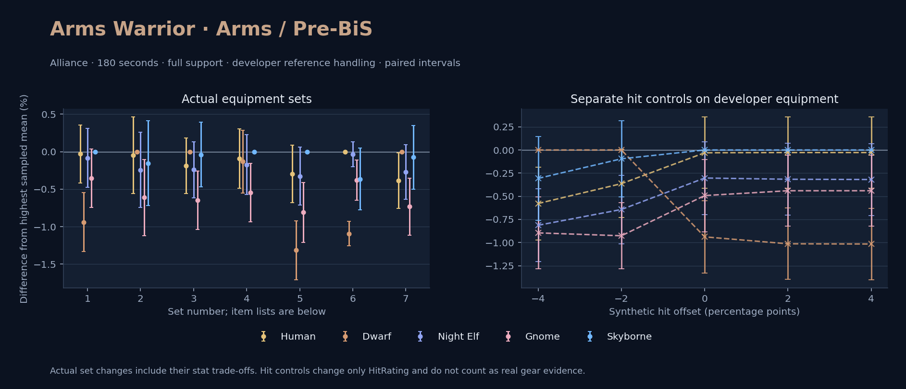

Alliance · Human / Dwarf / Night Elf / Gnome / Skyborne

No pet or guardian appears in the reference combat metrics. Reference: Human, developer equipment, 180 seconds and full support. Pet choices remain those of the developer build.
WoWSims developer · Pre-BiS
Unmeasured proc rates: [{"source": "enchant", "id": 1900, "name": "Enchant Weapon - Crusader", "kind": "ppm", "origin": "vanilla"}]
180 seconds, full support and original developer references. Hit below is generic sheet melee / spell hit; school and talent bonuses can be attached directly to spells.
| Race | DPS | Gap and interval | Generic hit | Replay |
|---|---|---|---|---|
| Skyborne | 758.14 | +0.000% ± 0.000 | 7.9% / 7.9% | Native input · Website JSON |
| Human | 757.91 | -0.030% ± 0.385 | 7.9% / 7.9% | Native input · Website JSON |
| Night Elf | 757.50 | -0.084% ± 0.392 | 7.9% / 7.9% | Native input · Website JSON |
| Gnome | 755.47 | -0.352% ± 0.390 | 7.9% / 7.9% | Native input · Website JSON |
| Dwarf | 751.02 | -0.939% ± 0.393 | 8.9% / 8.9% | Native input · Website JSON |
| Slot | Item | ID | Enchant |
|---|---|---|---|
| Head | Lionheart Helm | 12640 | Arcanum of Rapidity |
| Neck | Amulet of the Darkmoon | 19491 | |
| Shoulder | Adventurer's Shoulders | 10263 | |
| Back | Master's Cloak | 10249 | Enchant Cloak - Agility |
| Chest | Dawn Armor | 252483 | Enchant Chest - Greater Stats |
| Wrist | Mighty Armsplints | 10147 | Enchant Bracer - Agility |
| Hands | Gauntlets of Heroism | 226861 | Enchant Gloves - Greater Agility |
| Waist | Valiant's Waistguard | 272403 | |
| Legs | Titanic Leggings | 22385 | Arcanum of Rapidity |
| Feet | Battleboots of Heroism | 226857 | Enchant Boots - Greater Agility |
| Ring 1 | Cutthroat's Signet | 272408 | |
| Ring 2 | Band of the Better Half | 284716 | |
| Trinket 1 | Frozen Heart of the Mountain | 249469 | |
| Trinket 2 | Adaptive Combat Assistant | 272437 | |
| Main hand | Arcanite Reaper | 12784 | Enchant Weapon - Crusader |
| Ranged / relic | Archstrike Bow | 15289 |
WoWSims developer · Developer P1
180 seconds, full support and original developer references. Hit below is generic sheet melee / spell hit; school and talent bonuses can be attached directly to spells.
| Race | DPS | Gap and interval | Generic hit | Replay |
|---|---|---|---|---|
| Dwarf | 515.87 | +0.000% ± 0.000 | 1.0% / 1.0% | Native input · Website JSON |
| Human | 515.63 | -0.047% ± 0.508 | 0.0% / 0.0% | Native input · Website JSON |
| Skyborne | 515.08 | -0.155% ± 0.565 | 0.0% / 0.0% | Native input · Website JSON |
| Night Elf | 514.61 | -0.244% ± 0.501 | 0.0% / 0.0% | Native input · Website JSON |
| Gnome | 512.71 | -0.613% ± 0.507 | 0.0% / 0.0% | Native input · Website JSON |
| Slot | Item | ID | Enchant |
|---|---|---|---|
| Head | Enchanted Thorium Helm | 12620 | |
| Neck | Lady Alizabeth's Pendant | 13002 | |
| Shoulder | Dawnbringer Shoulders | 12625 | |
| Back | Mighty Cloak | 10148 | |
| Chest | Dark Iron Plate | 11604 | |
| Wrist | Bracers of Valor | 16735 | |
| Hands | Stonegrip Gauntlets | 13072 | |
| Waist | Girdle of Uther | 13077 | |
| Legs | Enchanted Thorium Leggings | 12619 | |
| Feet | Sapphiron's Scale Boots | 13070 | |
| Ring 1 | Band of the Hierophant | 13096 | |
| Ring 2 | Ring of Protection | 15855 | |
| Trinket 1 | Shard of the Splithooves | 10659 | |
| Trinket 2 | Demon's Blood | 10779 | |
| Main hand | Arcanite Reaper | 12784 | |
| Ranged / relic | Gryphonwing Long Bow | 13022 |
Published ranked alternatives · Published pre-raid
Recorded source replacements: [{"slot": "shoulder", "from": 22241, "to": 19058, "publishedAlternativeRank": 1, "publishedEpDelta": -5.2, "reason": "First published alternative compatible with the current WoWSims database, class, faction and occupied slots."}, {"slot": "wrist", "from": 13400, "to": 13120, "publishedAlternativeRank": 1, "publishedEpDelta": -12.7, "reason": "First published alternative compatible with the current WoWSims database, class, faction and occupied slots."}, {"slot": "finger2", "from": 17713, "to": 272407, "publishedAlternativeRank": 1, "publishedEpDelta": -19.6, "reason": "First published alternative compatible with the current WoWSims database, class, faction and occupied slots."}, {"slot": "trinket2", "from": 13171, "to": 274759, "publishedAlternativeRank": 1, "publishedEpDelta": -1.5, "reason": "First published alternative compatible with the current WoWSims database, class, faction and occupied slots."}, {"slot": "ranged", "from": 12651, "to": 13023, "publishedAlternativeRank": 2, "publishedEpDelta": -26.3, "reason": "First published alternative compatible with the current WoWSims database, class, faction and occupied slots."}]
Unmeasured proc rates: [{"source": "enchant", "id": 1900, "name": "Enchant Weapon - Crusader", "kind": "ppm", "origin": "vanilla"}]
180 seconds, full support and original developer references. Hit below is generic sheet melee / spell hit; school and talent bonuses can be attached directly to spells.
| Race | DPS | Gap and interval | Generic hit | Replay |
|---|---|---|---|---|
| Dwarf | 746.23 | +0.000% ± 0.000 | 8.0% / 8.0% | Native input · Website JSON |
| Skyborne | 745.94 | -0.038% ± 0.434 | 7.0% / 7.0% | Native input · Website JSON |
| Human | 744.81 | -0.191% ± 0.371 | 7.0% / 7.0% | Native input · Website JSON |
| Night Elf | 744.43 | -0.241% ± 0.373 | 7.0% / 7.0% | Native input · Website JSON |
| Gnome | 741.39 | -0.648% ± 0.387 | 7.0% / 7.0% | Native input · Website JSON |
| Slot | Item | ID | Enchant |
|---|---|---|---|
| Head | Lionheart Helm | 12640 | Lesser Arcane Amalgamation |
| Neck | Skibi's Pendant | 13089 | Enchant Necklace - Strength |
| Shoulder | Golden Mantle of the Dawn | 19058 | |
| Back | Howler's Furs | 272414 | Enchant Cloak - Agility |
| Chest | Timbermaw Tunic | 252484 | Enchant Chest - Greater Stats |
| Wrist | Deepfury Bracers | 13120 | Enchant Bracer - Superior Strength |
| Hands | Timbermaw Brawlers | 19049 | Enchant Gloves - Superior Strength |
| Waist | Valiant's Waistguard | 272403 | |
| Legs | Titanic Leggings | 22385 | Lesser Arcane Amalgamation |
| Feet | Scalegut Treaders | 275618 | Enchant Boots - Greater Agility |
| Ring 1 | Cutthroat's Signet | 272408 | |
| Ring 2 | Blessed Band of Light | 272407 | |
| Trinket 1 | Adaptive Combat Assistant | 272437 | |
| Trinket 2 | Everlook Pathcarver | 274759 | |
| Main hand | Arcanite Reaper | 12784 | Enchant Weapon - Crusader |
| Ranged / relic | Eaglehorn Long Bow | 13023 |
Published one-slot hit alternative · Published pre-raid
One source-listed alternative; at least 80% of the source slot score retained. Reported hit selects the contrast; only native stats determine simulation outcomes. This is an experimental combination, not an endorsed best set.
Recorded source replacements: [{"slot": "shoulder", "from": 22241, "to": 19058, "publishedAlternativeRank": 1, "publishedEpDelta": -5.2, "reason": "First published alternative compatible with the current WoWSims database, class, faction and occupied slots."}, {"slot": "wrist", "from": 13400, "to": 13120, "publishedAlternativeRank": 1, "publishedEpDelta": -12.7, "reason": "First published alternative compatible with the current WoWSims database, class, faction and occupied slots."}, {"slot": "finger2", "from": 17713, "to": 272407, "publishedAlternativeRank": 1, "publishedEpDelta": -19.6, "reason": "First published alternative compatible with the current WoWSims database, class, faction and occupied slots."}, {"slot": "trinket2", "from": 13171, "to": 274759, "publishedAlternativeRank": 1, "publishedEpDelta": -1.5, "reason": "First published alternative compatible with the current WoWSims database, class, faction and occupied slots."}, {"slot": "ranged", "from": 12651, "to": 13023, "publishedAlternativeRank": 2, "publishedEpDelta": -26.3, "reason": "First published alternative compatible with the current WoWSims database, class, faction and occupied slots."}]
Unmeasured proc rates: [{"source": "enchant", "id": 1900, "name": "Enchant Weapon - Crusader", "kind": "ppm", "origin": "vanilla"}]
180 seconds, full support and original developer references. Hit below is generic sheet melee / spell hit; school and talent bonuses can be attached directly to spells.
| Race | DPS | Gap and interval | Generic hit | Replay |
|---|---|---|---|---|
| Skyborne | 746.00 | +0.000% ± 0.000 | 7.2% / 7.2% | Native input · Website JSON |
| Human | 745.30 | -0.094% ± 0.396 | 7.2% / 7.2% | Native input · Website JSON |
| Dwarf | 745.00 | -0.133% ± 0.420 | 8.2% / 8.2% | Native input · Website JSON |
| Night Elf | 744.70 | -0.174% ± 0.400 | 7.2% / 7.2% | Native input · Website JSON |
| Gnome | 741.93 | -0.545% ± 0.391 | 7.2% / 7.2% | Native input · Website JSON |
| Slot | Item | ID | Enchant |
|---|---|---|---|
| Head | Lionheart Helm | 12640 | Lesser Arcane Amalgamation |
| Neck | Skibi's Pendant | 13089 | Enchant Necklace - Strength |
| Shoulder | Shadowcraft Spaulders | 16708 | |
| Back | Howler's Furs | 272414 | Enchant Cloak - Agility |
| Chest | Timbermaw Tunic | 252484 | Enchant Chest - Greater Stats |
| Wrist | Deepfury Bracers | 13120 | Enchant Bracer - Superior Strength |
| Hands | Timbermaw Brawlers | 19049 | Enchant Gloves - Superior Strength |
| Waist | Valiant's Waistguard | 272403 | |
| Legs | Titanic Leggings | 22385 | Lesser Arcane Amalgamation |
| Feet | Scalegut Treaders | 275618 | Enchant Boots - Greater Agility |
| Ring 1 | Cutthroat's Signet | 272408 | |
| Ring 2 | Blessed Band of Light | 272407 | |
| Trinket 1 | Adaptive Combat Assistant | 272437 | |
| Trinket 2 | Everlook Pathcarver | 274759 | |
| Main hand | Arcanite Reaper | 12784 | Enchant Weapon - Crusader |
| Ranged / relic | Eaglehorn Long Bow | 13023 |
Published ranked alternatives · Published pre-raid
Recorded source replacements: [{"slot": "shoulder", "from": 22241, "to": 19058, "publishedAlternativeRank": 1, "publishedEpDelta": -5.2, "reason": "First published alternative compatible with the current WoWSims database, class, faction and occupied slots."}, {"slot": "wrist", "from": 13400, "to": 13120, "publishedAlternativeRank": 1, "publishedEpDelta": -12.7, "reason": "First published alternative compatible with the current WoWSims database, class, faction and occupied slots."}, {"slot": "waist", "from": 227805, "to": 272403, "publishedAlternativeRank": 1, "publishedEpDelta": -13.5, "reason": "First published alternative compatible with the current WoWSims database, class, faction and occupied slots."}, {"slot": "finger2", "from": 17713, "to": 272407, "publishedAlternativeRank": 1, "publishedEpDelta": -19.6, "reason": "First published alternative compatible with the current WoWSims database, class, faction and occupied slots."}, {"slot": "ranged", "from": 2100, "to": 13023, "publishedAlternativeRank": 1, "publishedEpDelta": -2.7, "reason": "First published alternative compatible with the current WoWSims database, class, faction and occupied slots."}]
Unmeasured proc rates: [{"source": "enchant", "id": 1900, "name": "Enchant Weapon - Crusader", "kind": "ppm", "origin": "vanilla"}]
180 seconds, full support and original developer references. Hit below is generic sheet melee / spell hit; school and talent bonuses can be attached directly to spells.
| Race | DPS | Gap and interval | Generic hit | Replay |
|---|---|---|---|---|
| Skyborne | 753.31 | +0.000% ± 0.000 | 7.9% / 7.9% | Native input · Website JSON |
| Human | 751.09 | -0.294% ± 0.383 | 7.9% / 7.9% | Native input · Website JSON |
| Night Elf | 750.85 | -0.326% ± 0.386 | 7.9% / 7.9% | Native input · Website JSON |
| Gnome | 747.20 | -0.810% ± 0.397 | 7.9% / 7.9% | Native input · Website JSON |
| Dwarf | 743.41 | -1.314% ± 0.393 | 8.9% / 8.9% | Native input · Website JSON |
| Slot | Item | ID | Enchant |
|---|---|---|---|
| Head | Lionheart Helm | 12640 | Lesser Arcane Amalgamation |
| Neck | Skibi's Pendant | 13089 | Enchant Necklace - Strength |
| Shoulder | Golden Mantle of the Dawn | 19058 | |
| Back | Howler's Furs | 272414 | Enchant Cloak - Agility |
| Chest | Timbermaw Tunic | 252484 | Enchant Chest - Greater Stats |
| Wrist | Deepfury Bracers | 13120 | Enchant Bracer - Superior Strength |
| Hands | Timbermaw Brawlers | 19049 | Enchant Gloves - Superior Strength |
| Waist | Valiant's Waistguard | 272403 | |
| Legs | Titanic Leggings | 22385 | Lesser Arcane Amalgamation |
| Feet | Scalegut Treaders | 275618 | Enchant Boots - Greater Agility |
| Ring 1 | Cutthroat's Signet | 272408 | |
| Ring 2 | Blessed Band of Light | 272407 | |
| Trinket 1 | Adaptive Combat Assistant | 272437 | |
| Trinket 2 | Frozen Heart of the Mountain | 249469 | |
| Main hand | Arcanite Reaper | 12784 | Enchant Weapon - Crusader |
| Ranged / relic | Eaglehorn Long Bow | 13023 |
Published one-slot hit alternative · Published pre-raid
One source-listed alternative; at least 80% of the source slot score retained. Reported hit selects the contrast; only native stats determine simulation outcomes. This is an experimental combination, not an endorsed best set.
Recorded source replacements: [{"slot": "shoulder", "from": 22241, "to": 19058, "publishedAlternativeRank": 1, "publishedEpDelta": -5.2, "reason": "First published alternative compatible with the current WoWSims database, class, faction and occupied slots."}, {"slot": "wrist", "from": 13400, "to": 13120, "publishedAlternativeRank": 1, "publishedEpDelta": -12.7, "reason": "First published alternative compatible with the current WoWSims database, class, faction and occupied slots."}, {"slot": "waist", "from": 227805, "to": 272403, "publishedAlternativeRank": 1, "publishedEpDelta": -13.5, "reason": "First published alternative compatible with the current WoWSims database, class, faction and occupied slots."}, {"slot": "finger2", "from": 17713, "to": 272407, "publishedAlternativeRank": 1, "publishedEpDelta": -19.6, "reason": "First published alternative compatible with the current WoWSims database, class, faction and occupied slots."}, {"slot": "ranged", "from": 2100, "to": 13023, "publishedAlternativeRank": 1, "publishedEpDelta": -2.7, "reason": "First published alternative compatible with the current WoWSims database, class, faction and occupied slots."}]
Unmeasured proc rates: [{"source": "enchant", "id": 1900, "name": "Enchant Weapon - Crusader", "kind": "ppm", "origin": "vanilla"}]
180 seconds, full support and original developer references. Hit below is generic sheet melee / spell hit; school and talent bonuses can be attached directly to spells.
| Race | DPS | Gap and interval | Generic hit | Replay |
|---|---|---|---|---|
| Human | 732.19 | +0.000% ± 0.000 | 8.9% / 8.9% | Native input · Website JSON |
| Night Elf | 731.94 | -0.035% ± 0.164 | 8.9% / 8.9% | Native input · Website JSON |
| Skyborne | 729.52 | -0.365% ± 0.410 | 8.9% / 8.9% | Native input · Website JSON |
| Gnome | 729.40 | -0.382% ± 0.267 | 8.9% / 8.9% | Native input · Website JSON |
| Dwarf | 724.19 | -1.093% ± 0.164 | 9.9% / 9.9% | Native input · Website JSON |
| Slot | Item | ID | Enchant |
|---|---|---|---|
| Head | Lionheart Helm | 12640 | Lesser Arcane Amalgamation |
| Neck | Skibi's Pendant | 13089 | Enchant Necklace - Strength |
| Shoulder | Golden Mantle of the Dawn | 19058 | |
| Back | Howler's Furs | 272414 | Enchant Cloak - Agility |
| Chest | Timbermaw Tunic | 252484 | Enchant Chest - Greater Stats |
| Wrist | Deepfury Bracers | 13120 | Enchant Bracer - Superior Strength |
| Hands | Timbermaw Brawlers | 19049 | Enchant Gloves - Superior Strength |
| Waist | Valiant's Waistguard | 272403 | |
| Legs | Titanic Leggings | 22385 | Lesser Arcane Amalgamation |
| Feet | Scalegut Treaders | 275618 | Enchant Boots - Greater Agility |
| Ring 1 | Cutthroat's Signet | 272408 | |
| Ring 2 | Blessed Band of Light | 272407 | |
| Trinket 1 | Adaptive Combat Assistant | 272437 | |
| Trinket 2 | Frozen Heart of the Mountain | 249469 | |
| Main hand | Legionite Glaive | 250619 | Enchant Weapon - Crusader |
| Ranged / relic | Eaglehorn Long Bow | 13023 |
Published one-slot hit alternative · Published pre-raid
One source-listed alternative; at least 80% of the source slot score retained. Reported hit selects the contrast; only native stats determine simulation outcomes. This is an experimental combination, not an endorsed best set.
Recorded source replacements: [{"slot": "shoulder", "from": 22241, "to": 19058, "publishedAlternativeRank": 1, "publishedEpDelta": -5.2, "reason": "First published alternative compatible with the current WoWSims database, class, faction and occupied slots."}, {"slot": "back", "from": 13340, "to": 272414, "publishedAlternativeRank": 1, "publishedEpDelta": -13.9, "reason": "First published alternative compatible with the current WoWSims database, class, faction and occupied slots."}, {"slot": "wrist", "from": 13400, "to": 13120, "publishedAlternativeRank": 1, "publishedEpDelta": -12.7, "reason": "First published alternative compatible with the current WoWSims database, class, faction and occupied slots."}, {"slot": "waist", "from": 227805, "to": 272403, "publishedAlternativeRank": 1, "publishedEpDelta": -13.5, "reason": "First published alternative compatible with the current WoWSims database, class, faction and occupied slots."}, {"slot": "finger2", "from": 17713, "to": 272407, "publishedAlternativeRank": 1, "publishedEpDelta": -19.6, "reason": "First published alternative compatible with the current WoWSims database, class, faction and occupied slots."}, {"slot": "ranged", "from": 2100, "to": 13023, "publishedAlternativeRank": 1, "publishedEpDelta": -2.7, "reason": "First published alternative compatible with the current WoWSims database, class, faction and occupied slots."}]
Unmeasured proc rates: [{"source": "enchant", "id": 1900, "name": "Enchant Weapon - Crusader", "kind": "ppm", "origin": "vanilla"}]
180 seconds, full support and original developer references. Hit below is generic sheet melee / spell hit; school and talent bonuses can be attached directly to spells.
| Race | DPS | Gap and interval | Generic hit | Replay |
|---|---|---|---|---|
| Dwarf | 743.27 | +0.000% ± 0.000 | 7.9% / 7.9% | Native input · Website JSON |
| Skyborne | 742.70 | -0.077% ± 0.427 | 6.9% / 6.9% | Native input · Website JSON |
| Night Elf | 741.24 | -0.272% ± 0.363 | 6.9% / 6.9% | Native input · Website JSON |
| Human | 740.39 | -0.387% ± 0.368 | 6.9% / 6.9% | Native input · Website JSON |
| Gnome | 737.82 | -0.733% ± 0.380 | 6.9% / 6.9% | Native input · Website JSON |
| Slot | Item | ID | Enchant |
|---|---|---|---|
| Head | Lionheart Helm | 12640 | Lesser Arcane Amalgamation |
| Neck | Skibi's Pendant | 13089 | Enchant Necklace - Strength |
| Shoulder | Golden Mantle of the Dawn | 19058 | |
| Back | Shifting Cloak | 18511 | Enchant Cloak - Agility |
| Chest | Timbermaw Tunic | 252484 | Enchant Chest - Greater Stats |
| Wrist | Deepfury Bracers | 13120 | Enchant Bracer - Superior Strength |
| Hands | Timbermaw Brawlers | 19049 | Enchant Gloves - Superior Strength |
| Waist | Valiant's Waistguard | 272403 | |
| Legs | Titanic Leggings | 22385 | Lesser Arcane Amalgamation |
| Feet | Scalegut Treaders | 275618 | Enchant Boots - Greater Agility |
| Ring 1 | Cutthroat's Signet | 272408 | |
| Ring 2 | Blessed Band of Light | 272407 | |
| Trinket 1 | Adaptive Combat Assistant | 272437 | |
| Trinket 2 | Frozen Heart of the Mountain | 249469 | |
| Main hand | Arcanite Reaper | 12784 | Enchant Weapon - Crusader |
| Ranged / relic | Eaglehorn Long Bow | 13023 |
The same declared pool is available to every race. Each race keeps its best validation-sample set with its screening-selected racial policy. Separate samples confirm that choice, with fresh precision samples near the practical-loss boundary. Gaps use the highest sampled mean under that same duration, support and reference treatment as their reference. A zero reference gap does not certify a race; the main matrix also allows uncertainty in the leader.
| Pool | Seconds | Support | References | Race | DPS | Gap and interval | Racial policies / mana | Selected set | Generic hit: melee / spell | Replay |
|---|---|---|---|---|---|---|---|---|---|---|
| published-pre-raid | 60 | full | developer | Skyborne | 781.62 | +0.000% ± 0.0005,000 iterations | developer / developer / developerMana waits 0.0s | published-warrior-arms-alliance-19026f9d84254995-higher-hit | 7.2% / 7.2% | Input · Result · Stats |
| published-pre-raid | 60 | full | developer | Night Elf | 776.27 | -0.685% ± 0.2435,000 iterations | developer / developer / developerMana waits 0.0s | published-warrior-arms-alliance-19026f9d84254995-higher-hit | 7.2% / 7.2% | Input · Result · Stats |
| published-pre-raid | 60 | full | developer | Gnome | 764.75 | -2.159% ± 0.2305,000 iterations | developer / developer / developerMana waits 0.0s | published-warrior-arms-alliance-19026f9d84254995-higher-hit | 7.2% / 7.2% | Input · Result · Stats |
| published-pre-raid | 60 | full | developer | Dwarf | 764.28 | -2.219% ± 0.2615,000 iterations | developer / developer / developerMana waits 0.0s | published-warrior-arms-alliance-19026f9d84254995 | 8.0% / 8.0% | Input · Result · Stats |
| published-pre-raid | 60 | full | developer | Human | 763.68 | -2.296% ± 0.2305,000 iterations | developer / developer / developerMana waits 0.0s | published-warrior-arms-alliance-19026f9d84254995-higher-hit | 7.2% / 7.2% | Input · Result · Stats |
| published-pre-raid | 60 | full | explicit | Skyborne | 781.62 | +0.000% ± 0.0005,000 iterations | developer / developer / developerMana waits 0.0s | published-warrior-arms-alliance-19026f9d84254995-higher-hit | 7.2% / 7.2% | Input · Result · Stats |
| published-pre-raid | 60 | full | explicit | Night Elf | 776.27 | -0.685% ± 0.2435,000 iterations | developer / developer / developerMana waits 0.0s | published-warrior-arms-alliance-19026f9d84254995-higher-hit | 7.2% / 7.2% | Input · Result · Stats |
| published-pre-raid | 60 | full | explicit | Gnome | 764.75 | -2.159% ± 0.2305,000 iterations | developer / developer / developerMana waits 0.0s | published-warrior-arms-alliance-19026f9d84254995-higher-hit | 7.2% / 7.2% | Input · Result · Stats |
| published-pre-raid | 60 | full | explicit | Dwarf | 764.28 | -2.219% ± 0.2615,000 iterations | developer / developer / developerMana waits 0.0s | published-warrior-arms-alliance-19026f9d84254995 | 8.0% / 8.0% | Input · Result · Stats |
| published-pre-raid | 60 | full | explicit | Human | 763.68 | -2.296% ± 0.2305,000 iterations | developer / developer / developerMana waits 0.0s | published-warrior-arms-alliance-19026f9d84254995-higher-hit | 7.2% / 7.2% | Input · Result · Stats |
| published-pre-raid | 60 | self | developer | Skyborne | 370.67 | +0.000% ± 0.0005,000 iterations | developer / developer / developerMana waits 0.0s | published-warrior-arms-alliance-19026f9d84254995-higher-hit | 7.2% / 7.2% | Input · Result · Stats |
| published-pre-raid | 60 | self | developer | Night Elf | 364.93 | -1.549% ± 0.3545,000 iterations | delay15 / developer / developerMana waits 0.0s | published-warrior-arms-alliance-19026f9d84254995-higher-hit | 7.2% / 7.2% | Input · Result · Stats |
| published-pre-raid | 60 | self | developer | Gnome | 357.17 | -3.642% ± 0.3265,000 iterations | developer / developer / developerMana waits 0.0s | published-warrior-arms-alliance-19026f9d84254995-higher-hit | 7.2% / 7.2% | Input · Result · Stats |
| published-pre-raid | 60 | self | developer | Human | 356.32 | -3.872% ± 0.3325,000 iterations | developer / developer / developerMana waits 0.0s | published-warrior-arms-alliance-19026f9d84254995-higher-hit | 7.2% / 7.2% | Input · Result · Stats |
| published-pre-raid | 60 | self | developer | Dwarf | 355.21 | -4.170% ± 0.3635,000 iterations | developer / developer / developerMana waits 0.0s | published-warrior-arms-alliance-19026f9d84254995 | 8.0% / 8.0% | Input · Result · Stats |
| published-pre-raid | 60 | self | explicit | Skyborne | 336.16 | +0.000% ± 0.0005,000 iterations | developer / developer / developerMana waits 0.0s | published-warrior-arms-alliance-19026f9d84254995 | 7.0% / 7.0% | Input · Result · Stats |
| published-pre-raid | 60 | self | explicit | Night Elf | 329.41 | -2.010% ± 0.4545,000 iterations | delay15 / developer / developerMana waits 0.0s | published-warrior-arms-alliance-68e63494c6de358c-higher-hit | 8.9% / 8.9% | Input · Result · Stats |
| published-pre-raid | 60 | self | explicit | Gnome | 321.59 | -4.335% ± 0.4025,000 iterations | delay15 / developer / developerMana waits 0.0s | published-warrior-arms-alliance-19026f9d84254995 | 7.0% / 7.0% | Input · Result · Stats |
| published-pre-raid | 60 | self | explicit | Human | 321.24 | -4.439% ± 0.4355,000 iterations | developer / developer / developerMana waits 0.0s | published-warrior-arms-alliance-68e63494c6de358c-higher-hit | 8.9% / 8.9% | Input · Result · Stats |
| published-pre-raid | 60 | self | explicit | Dwarf | 321.08 | -4.486% ± 0.4105,000 iterations | developer / developer / developerMana waits 0.0s | published-warrior-arms-alliance-19026f9d84254995 | 8.0% / 8.0% | Input · Result · Stats |
| published-pre-raid | 180 | full | developer | Skyborne | 753.98 | +0.000% ± 0.00020,000 iterations | developer / developer / developerMana waits 0.0s | published-warrior-arms-alliance-68e63494c6de358c | 7.9% / 7.9% | Input · Result · Stats · Website JSON |
| published-pre-raid | 180 | full | developer | Human | 752.38 | -0.212% ± 0.09220,000 iterations | developer / developer / developerMana waits 0.0s | published-warrior-arms-alliance-68e63494c6de358c | 7.9% / 7.9% | Input · Result · Stats · Website JSON |
| published-pre-raid | 180 | full | developer | Night Elf | 751.63 | -0.312% ± 0.09220,000 iterations | delay15 / developer / developerMana waits 0.0s | published-warrior-arms-alliance-68e63494c6de358c | 7.9% / 7.9% | Input · Result · Stats · Website JSON |
| published-pre-raid | 180 | full | developer | Gnome | 748.63 | -0.709% ± 0.09020,000 iterations | oncd / developer / developerMana waits 0.0s | published-warrior-arms-alliance-68e63494c6de358c | 7.9% / 7.9% | Input · Result · Stats · Website JSON |
| published-pre-raid | 180 | full | developer | Dwarf | 747.71 | -0.832% ± 0.09120,000 iterations | developer / developer / developerMana waits 0.0s | published-warrior-arms-alliance-19026f9d84254995 | 8.0% / 8.0% | Input · Result · Stats · Website JSON |
| published-pre-raid | 180 | full | explicit | Skyborne | 753.98 | +0.000% ± 0.00020,000 iterations | developer / developer / developerMana waits 0.0s | published-warrior-arms-alliance-68e63494c6de358c | 7.9% / 7.9% | Input · Result · Stats |
| published-pre-raid | 180 | full | explicit | Human | 752.38 | -0.212% ± 0.09220,000 iterations | developer / developer / developerMana waits 0.0s | published-warrior-arms-alliance-68e63494c6de358c | 7.9% / 7.9% | Input · Result · Stats |
| published-pre-raid | 180 | full | explicit | Night Elf | 751.63 | -0.312% ± 0.09220,000 iterations | delay15 / developer / developerMana waits 0.0s | published-warrior-arms-alliance-68e63494c6de358c | 7.9% / 7.9% | Input · Result · Stats |
| published-pre-raid | 180 | full | explicit | Gnome | 748.63 | -0.709% ± 0.09020,000 iterations | oncd / developer / developerMana waits 0.0s | published-warrior-arms-alliance-68e63494c6de358c | 7.9% / 7.9% | Input · Result · Stats |
| published-pre-raid | 180 | full | explicit | Dwarf | 747.71 | -0.832% ± 0.09120,000 iterations | developer / developer / developerMana waits 0.0s | published-warrior-arms-alliance-19026f9d84254995 | 8.0% / 8.0% | Input · Result · Stats |
| published-pre-raid | 180 | self | developer | Skyborne | 334.75 | +0.000% ± 0.00020,000 iterations | developer / developer / developerMana waits 0.0s | published-warrior-arms-alliance-68e63494c6de358c | 7.9% / 7.9% | Input · Result · Stats |
| published-pre-raid | 180 | self | developer | Night Elf | 333.78 | -0.292% ± 0.13720,000 iterations | delay15 / developer / developerMana waits 0.0s | published-warrior-arms-alliance-68e63494c6de358c-higher-hit | 8.9% / 8.9% | Input · Result · Stats |
| published-pre-raid | 180 | self | developer | Human | 333.64 | -0.333% ± 0.13720,000 iterations | developer / developer / developerMana waits 0.0s | published-warrior-arms-alliance-68e63494c6de358c-higher-hit | 8.9% / 8.9% | Input · Result · Stats |
| published-pre-raid | 180 | self | developer | Gnome | 332.14 | -0.781% ± 0.13620,000 iterations | delay15 / developer / developerMana waits 0.0s | published-warrior-arms-alliance-68e63494c6de358c-higher-hit | 8.9% / 8.9% | Input · Result · Stats |
| published-pre-raid | 180 | self | developer | Dwarf | 330.09 | -1.393% ± 0.12720,000 iterations | developer / developer / developerMana waits 0.0s | published-warrior-arms-alliance-19026f9d84254995 | 8.0% / 8.0% | Input · Result · Stats |
| published-pre-raid | 180 | self | explicit | Skyborne | 314.31 | +0.000% ± 0.00020,000 iterations | developer / developer / developerMana waits 0.0s | published-warrior-arms-alliance-68e63494c6de358c | 7.9% / 7.9% | Input · Result · Stats |
| published-pre-raid | 180 | self | explicit | Night Elf | 313.64 | -0.213% ± 0.14620,000 iterations | delay15 / developer / developerMana waits 0.0s | published-warrior-arms-alliance-68e63494c6de358c-higher-hit | 8.9% / 8.9% | Input · Result · Stats |
| published-pre-raid | 180 | self | explicit | Human | 313.43 | -0.281% ± 0.14620,000 iterations | developer / developer / developerMana waits 0.0s | published-warrior-arms-alliance-68e63494c6de358c-higher-hit | 8.9% / 8.9% | Input · Result · Stats |
| published-pre-raid | 180 | self | explicit | Gnome | 311.34 | -0.945% ± 0.14320,000 iterations | delay15 / developer / developerMana waits 0.0s | published-warrior-arms-alliance-68e63494c6de358c-higher-hit | 8.9% / 8.9% | Input · Result · Stats |
| published-pre-raid | 180 | self | explicit | Dwarf | 308.96 | -1.702% ± 0.13320,000 iterations | developer / developer / developerMana waits 0.0s | published-warrior-arms-alliance-19026f9d84254995 | 8.0% / 8.0% | Input · Result · Stats |
| published-pre-raid | 300 | full | developer | Skyborne | 741.86 | +0.000% ± 0.00020,000 iterations | developer / developer / developerMana waits 0.0s | published-warrior-arms-alliance-68e63494c6de358c | 7.9% / 7.9% | Input · Result · Stats |
| published-pre-raid | 300 | full | developer | Night Elf | 739.26 | -0.350% ± 0.07220,000 iterations | delay15 / developer / developerMana waits 0.0s | published-warrior-arms-alliance-68e63494c6de358c | 7.9% / 7.9% | Input · Result · Stats |
| published-pre-raid | 300 | full | developer | Human | 738.54 | -0.448% ± 0.07220,000 iterations | developer / developer / developerMana waits 0.0s | published-warrior-arms-alliance-68e63494c6de358c | 7.9% / 7.9% | Input · Result · Stats |
| published-pre-raid | 300 | full | developer | Gnome | 735.10 | -0.911% ± 0.07020,000 iterations | oncd / developer / developerMana waits 0.0s | published-warrior-arms-alliance-68e63494c6de358c | 7.9% / 7.9% | Input · Result · Stats |
| published-pre-raid | 300 | full | developer | Dwarf | 733.02 | -1.191% ± 0.07220,000 iterations | developer / developer / developerMana waits 0.0s | published-warrior-arms-alliance-19026f9d84254995 | 8.0% / 8.0% | Input · Result · Stats |
| published-pre-raid | 300 | full | explicit | Skyborne | 741.86 | +0.000% ± 0.00020,000 iterations | developer / developer / developerMana waits 0.0s | published-warrior-arms-alliance-68e63494c6de358c | 7.9% / 7.9% | Input · Result · Stats |
| published-pre-raid | 300 | full | explicit | Night Elf | 739.26 | -0.350% ± 0.07220,000 iterations | delay15 / developer / developerMana waits 0.0s | published-warrior-arms-alliance-68e63494c6de358c | 7.9% / 7.9% | Input · Result · Stats |
| published-pre-raid | 300 | full | explicit | Human | 738.54 | -0.448% ± 0.07220,000 iterations | developer / developer / developerMana waits 0.0s | published-warrior-arms-alliance-68e63494c6de358c | 7.9% / 7.9% | Input · Result · Stats |
| published-pre-raid | 300 | full | explicit | Gnome | 735.10 | -0.911% ± 0.07020,000 iterations | oncd / developer / developerMana waits 0.0s | published-warrior-arms-alliance-68e63494c6de358c | 7.9% / 7.9% | Input · Result · Stats |
| published-pre-raid | 300 | full | explicit | Dwarf | 733.02 | -1.191% ± 0.07220,000 iterations | developer / developer / developerMana waits 0.0s | published-warrior-arms-alliance-19026f9d84254995 | 8.0% / 8.0% | Input · Result · Stats |
| published-pre-raid | 300 | self | developer | Skyborne | 327.79 | +0.000% ± 0.0005,000 iterations | developer / developer / developerMana waits 0.0s | published-warrior-arms-alliance-68e63494c6de358c | 7.9% / 7.9% | Input · Result · Stats |
| published-pre-raid | 300 | self | developer | Night Elf | 325.85 | -0.593% ± 0.2245,000 iterations | delay15 / developer / developerMana waits 0.0s | published-warrior-arms-alliance-68e63494c6de358c-higher-hit | 8.9% / 8.9% | Input · Result · Stats |
| published-pre-raid | 300 | self | developer | Human | 325.15 | -0.807% ± 0.2215,000 iterations | developer / developer / developerMana waits 0.0s | published-warrior-arms-alliance-68e63494c6de358c-higher-hit | 8.9% / 8.9% | Input · Result · Stats |
| published-pre-raid | 300 | self | developer | Gnome | 323.73 | -1.241% ± 0.2195,000 iterations | delay15 / developer / developerMana waits 0.0s | published-warrior-arms-alliance-68e63494c6de358c-higher-hit | 8.9% / 8.9% | Input · Result · Stats |
| published-pre-raid | 300 | self | developer | Dwarf | 320.83 | -2.125% ± 0.2065,000 iterations | developer / developer / developerMana waits 0.0s | published-warrior-arms-alliance-19026f9d84254995 | 8.0% / 8.0% | Input · Result · Stats |
| published-pre-raid | 300 | self | explicit | Skyborne | 310.45 | +0.000% ± 0.0005,000 iterations | developer / developer / developerMana waits 0.0s | published-warrior-arms-alliance-68e63494c6de358c | 7.9% / 7.9% | Input · Result · Stats |
| published-pre-raid | 300 | self | explicit | Night Elf | 307.67 | -0.895% ± 0.2225,000 iterations | oncd / developer / developerMana waits 0.0s | published-warrior-arms-alliance-68e63494c6de358c-higher-hit | 8.9% / 8.9% | Input · Result · Stats |
| published-pre-raid | 300 | self | explicit | Human | 307.16 | -1.061% ± 0.2205,000 iterations | developer / developer / developerMana waits 0.0s | published-warrior-arms-alliance-68e63494c6de358c-higher-hit | 8.9% / 8.9% | Input · Result · Stats |
| published-pre-raid | 300 | self | explicit | Gnome | 305.53 | -1.587% ± 0.2225,000 iterations | delay15 / developer / developerMana waits 0.0s | published-warrior-arms-alliance-68e63494c6de358c-higher-hit | 8.9% / 8.9% | Input · Result · Stats |
| published-pre-raid | 300 | self | explicit | Dwarf | 302.93 | -2.425% ± 0.2145,000 iterations | developer / developer / developerMana waits 0.0s | published-warrior-arms-alliance-68e63494c6de358c-higher-hit | 9.9% / 9.9% | Input · Result · Stats |
| developer-reference | 60 | full | developer | Night Elf | 802.38 | +0.000% ± 0.0005,000 iterations | developer / developer / developerMana waits 0.0s | developer | 7.9% / 7.9% | Input · Result · Stats |
| developer-reference | 60 | full | developer | Gnome | 790.88 | -1.433% ± 0.1045,000 iterations | developer / developer / developerMana waits 0.0s | developer | 7.9% / 7.9% | Input · Result · Stats |
| developer-reference | 60 | full | developer | Human | 788.02 | -1.789% ± 0.0985,000 iterations | developer / developer / developerMana waits 0.0s | developer | 7.9% / 7.9% | Input · Result · Stats |
| developer-reference | 60 | full | developer | Skyborne | 782.01 | -2.539% ± 0.2215,000 iterations | developer / developer / developerMana waits 0.0s | developer | 7.9% / 7.9% | Input · Result · Stats |
| developer-reference | 60 | full | developer | Dwarf | 781.28 | -2.630% ± 0.1145,000 iterations | developer / developer / developerMana waits 0.0s | developer | 8.9% / 8.9% | Input · Result · Stats |
| developer-reference | 60 | full | explicit | Night Elf | 802.38 | +0.000% ± 0.0005,000 iterations | developer / developer / developerMana waits 0.0s | developer | 7.9% / 7.9% | Input · Result · Stats |
| developer-reference | 60 | full | explicit | Gnome | 790.88 | -1.433% ± 0.1045,000 iterations | developer / developer / developerMana waits 0.0s | developer | 7.9% / 7.9% | Input · Result · Stats |
| developer-reference | 60 | full | explicit | Human | 788.02 | -1.789% ± 0.0985,000 iterations | developer / developer / developerMana waits 0.0s | developer | 7.9% / 7.9% | Input · Result · Stats |
| developer-reference | 60 | full | explicit | Skyborne | 782.01 | -2.539% ± 0.2215,000 iterations | developer / developer / developerMana waits 0.0s | developer | 7.9% / 7.9% | Input · Result · Stats |
| developer-reference | 60 | full | explicit | Dwarf | 781.28 | -2.630% ± 0.1145,000 iterations | developer / developer / developerMana waits 0.0s | developer | 8.9% / 8.9% | Input · Result · Stats |
| developer-reference | 60 | self | developer | Night Elf | 381.37 | +0.000% ± 0.0005,000 iterations | delay15 / developer / developerMana waits 0.0s | developer | 7.9% / 7.9% | Input · Result · Stats |
| developer-reference | 60 | self | developer | Gnome | 375.24 | -1.608% ± 0.1865,000 iterations | developer / developer / developerMana waits 0.0s | developer | 7.9% / 7.9% | Input · Result · Stats |
| developer-reference | 60 | self | developer | Human | 373.10 | -2.169% ± 0.1815,000 iterations | developer / developer / developerMana waits 0.0s | developer | 7.9% / 7.9% | Input · Result · Stats |
| developer-reference | 60 | self | developer | Dwarf | 368.67 | -3.332% ± 0.2015,000 iterations | developer / developer / developerMana waits 0.0s | developer | 8.9% / 8.9% | Input · Result · Stats |
| developer-reference | 60 | self | developer | Skyborne | 367.78 | -3.563% ± 0.3145,000 iterations | developer / developer / developerMana waits 0.0s | developer | 7.9% / 7.9% | Input · Result · Stats |
| developer-reference | 60 | self | explicit | Night Elf | 345.49 | +0.000% ± 0.0005,000 iterations | oncd / developer / developerMana waits 0.0s | developer | 7.9% / 7.9% | Input · Result · Stats |
| developer-reference | 60 | self | explicit | Gnome | 339.46 | -1.745% ± 0.2895,000 iterations | developer / developer / developerMana waits 0.0s | developer | 7.9% / 7.9% | Input · Result · Stats |
| developer-reference | 60 | self | explicit | Human | 337.45 | -2.327% ± 0.2755,000 iterations | developer / developer / developerMana waits 0.0s | developer | 7.9% / 7.9% | Input · Result · Stats |
| developer-reference | 60 | self | explicit | Skyborne | 334.77 | -3.104% ± 0.3445,000 iterations | developer / developer / developerMana waits 0.0s | developer | 7.9% / 7.9% | Input · Result · Stats |
| developer-reference | 60 | self | explicit | Dwarf | 333.43 | -3.490% ± 0.2975,000 iterations | developer / developer / developerMana waits 0.0s | developer | 8.9% / 8.9% | Input · Result · Stats |
| developer-reference | 180 | full | developer | Skyborne | 760.16 | +0.000% ± 0.00020,000 iterations | developer / developer / developerMana waits 0.0s | developer | 7.9% / 7.9% | Input · Result · Stats · Website JSON |
| developer-reference | 180 | full | developer | Human | 759.23 | -0.122% ± 0.08720,000 iterations | developer / developer / developerMana waits 0.0s | developer | 7.9% / 7.9% | Input · Result · Stats · Website JSON |
| developer-reference | 180 | full | developer | Night Elf | 758.68 | -0.195% ± 0.08720,000 iterations | delay15 / developer / developerMana waits 0.0s | developer | 7.9% / 7.9% | Input · Result · Stats · Website JSON |
| developer-reference | 180 | full | developer | Gnome | 757.22 | -0.387% ± 0.08620,000 iterations | delay15 / developer / developerMana waits 0.0s | developer | 7.9% / 7.9% | Input · Result · Stats · Website JSON |
| developer-reference | 180 | full | developer | Dwarf | 752.79 | -0.970% ± 0.08720,000 iterations | developer / developer / developerMana waits 0.0s | developer | 8.9% / 8.9% | Input · Result · Stats · Website JSON |
| developer-reference | 180 | full | explicit | Skyborne | 760.16 | +0.000% ± 0.00020,000 iterations | developer / developer / developerMana waits 0.0s | developer | 7.9% / 7.9% | Input · Result · Stats |
| developer-reference | 180 | full | explicit | Human | 759.23 | -0.122% ± 0.08720,000 iterations | developer / developer / developerMana waits 0.0s | developer | 7.9% / 7.9% | Input · Result · Stats |
| developer-reference | 180 | full | explicit | Night Elf | 758.68 | -0.195% ± 0.08720,000 iterations | delay15 / developer / developerMana waits 0.0s | developer | 7.9% / 7.9% | Input · Result · Stats |
| developer-reference | 180 | full | explicit | Gnome | 757.22 | -0.387% ± 0.08620,000 iterations | delay15 / developer / developerMana waits 0.0s | developer | 7.9% / 7.9% | Input · Result · Stats |
| developer-reference | 180 | full | explicit | Dwarf | 752.79 | -0.970% ± 0.08720,000 iterations | developer / developer / developerMana waits 0.0s | developer | 8.9% / 8.9% | Input · Result · Stats |
| developer-reference | 180 | self | developer | Skyborne | 339.04 | +0.000% ± 0.00020,000 iterations | developer / developer / developerMana waits 0.0s | developer | 7.9% / 7.9% | Input · Result · Stats |
| developer-reference | 180 | self | developer | Human | 337.43 | -0.475% ± 0.12120,000 iterations | developer / developer / developerMana waits 0.0s | developer | 7.9% / 7.9% | Input · Result · Stats |
| developer-reference | 180 | self | developer | Night Elf | 337.40 | -0.483% ± 0.12220,000 iterations | delay15 / developer / developerMana waits 0.0s | developer | 7.9% / 7.9% | Input · Result · Stats |
| developer-reference | 180 | self | developer | Gnome | 334.49 | -1.341% ± 0.12320,000 iterations | oncd / developer / developerMana waits 0.0s | developer | 7.9% / 7.9% | Input · Result · Stats |
| developer-reference | 180 | self | developer | Dwarf | 333.26 | -1.704% ± 0.12020,000 iterations | developer / developer / developerMana waits 0.0s | developer | 8.9% / 8.9% | Input · Result · Stats |
| developer-reference | 180 | self | explicit | Skyborne | 318.83 | +0.000% ± 0.00020,000 iterations | developer / developer / developerMana waits 0.0s | developer | 7.9% / 7.9% | Input · Result · Stats |
| developer-reference | 180 | self | explicit | Night Elf | 316.52 | -0.726% ± 0.12320,000 iterations | delay15 / developer / developerMana waits 0.0s | developer | 7.9% / 7.9% | Input · Result · Stats |
| developer-reference | 180 | self | explicit | Human | 316.51 | -0.727% ± 0.12120,000 iterations | developer / developer / developerMana waits 0.0s | developer | 7.9% / 7.9% | Input · Result · Stats |
| developer-reference | 180 | self | explicit | Gnome | 314.71 | -1.291% ± 0.12920,000 iterations | delay15 / developer / developerMana waits 0.0s | developer | 7.9% / 7.9% | Input · Result · Stats |
| developer-reference | 180 | self | explicit | Dwarf | 312.35 | -2.033% ± 0.11820,000 iterations | developer / developer / developerMana waits 0.0s | developer | 8.9% / 8.9% | Input · Result · Stats |
| developer-reference | 300 | full | developer | Skyborne | 748.97 | +0.000% ± 0.00020,000 iterations | developer / developer / developerMana waits 0.0s | developer | 7.9% / 7.9% | Input · Result · Stats |
| developer-reference | 300 | full | developer | Night Elf | 747.61 | -0.182% ± 0.06820,000 iterations | delay15 / developer / developerMana waits 0.0s | developer | 7.9% / 7.9% | Input · Result · Stats |
| developer-reference | 300 | full | developer | Human | 746.53 | -0.326% ± 0.06720,000 iterations | developer / developer / developerMana waits 0.0s | developer | 7.9% / 7.9% | Input · Result · Stats |
| developer-reference | 300 | full | developer | Gnome | 743.62 | -0.715% ± 0.06720,000 iterations | oncd / developer / developerMana waits 0.0s | developer | 7.9% / 7.9% | Input · Result · Stats |
| developer-reference | 300 | full | developer | Dwarf | 740.23 | -1.168% ± 0.06720,000 iterations | developer / developer / developerMana waits 0.0s | developer | 8.9% / 8.9% | Input · Result · Stats |
| developer-reference | 300 | full | explicit | Skyborne | 748.97 | +0.000% ± 0.00020,000 iterations | developer / developer / developerMana waits 0.0s | developer | 7.9% / 7.9% | Input · Result · Stats |
| developer-reference | 300 | full | explicit | Night Elf | 747.61 | -0.182% ± 0.06820,000 iterations | delay15 / developer / developerMana waits 0.0s | developer | 7.9% / 7.9% | Input · Result · Stats |
| developer-reference | 300 | full | explicit | Human | 746.53 | -0.326% ± 0.06720,000 iterations | developer / developer / developerMana waits 0.0s | developer | 7.9% / 7.9% | Input · Result · Stats |
| developer-reference | 300 | full | explicit | Gnome | 743.62 | -0.715% ± 0.06720,000 iterations | oncd / developer / developerMana waits 0.0s | developer | 7.9% / 7.9% | Input · Result · Stats |
| developer-reference | 300 | full | explicit | Dwarf | 740.23 | -1.168% ± 0.06720,000 iterations | developer / developer / developerMana waits 0.0s | developer | 8.9% / 8.9% | Input · Result · Stats |
| developer-reference | 300 | self | developer | Skyborne | 332.66 | +0.000% ± 0.0005,000 iterations | developer / developer / developerMana waits 0.0s | developer | 7.9% / 7.9% | Input · Result · Stats |
| developer-reference | 300 | self | developer | Night Elf | 330.71 | -0.588% ± 0.2065,000 iterations | oncd / developer / developerMana waits 0.0s | developer | 7.9% / 7.9% | Input · Result · Stats |
| developer-reference | 300 | self | developer | Human | 329.89 | -0.835% ± 0.2055,000 iterations | developer / developer / developerMana waits 0.0s | developer | 7.9% / 7.9% | Input · Result · Stats |
| developer-reference | 300 | self | developer | Gnome | 327.37 | -1.592% ± 0.2025,000 iterations | oncd / developer / developerMana waits 0.0s | developer | 7.9% / 7.9% | Input · Result · Stats |
| developer-reference | 300 | self | developer | Dwarf | 326.01 | -2.001% ± 0.2025,000 iterations | developer / developer / developerMana waits 0.0s | developer | 8.9% / 8.9% | Input · Result · Stats |
| developer-reference | 300 | self | explicit | Skyborne | 314.04 | +0.000% ± 0.0005,000 iterations | developer / developer / developerMana waits 0.0s | developer | 7.9% / 7.9% | Input · Result · Stats |
| developer-reference | 300 | self | explicit | Night Elf | 312.60 | -0.459% ± 0.2055,000 iterations | oncd / developer / developerMana waits 0.0s | developer | 7.9% / 7.9% | Input · Result · Stats |
| developer-reference | 300 | self | explicit | Human | 311.55 | -0.794% ± 0.2045,000 iterations | developer / developer / developerMana waits 0.0s | developer | 7.9% / 7.9% | Input · Result · Stats |
| developer-reference | 300 | self | explicit | Gnome | 309.35 | -1.494% ± 0.2085,000 iterations | delay15 / developer / developerMana waits 0.0s | developer | 7.9% / 7.9% | Input · Result · Stats |
| developer-reference | 300 | self | explicit | Dwarf | 308.04 | -1.909% ± 0.1985,000 iterations | developer / developer / developerMana waits 0.0s | developer | 8.9% / 8.9% | Input · Result · Stats |
180 seconds, full support and the developer equipment anchor. These checks test creature sensitivity without a full gear search.
| Target | References | Race | DPS | Gap and interval | Replay |
|---|---|---|---|---|---|
| beast | developer | Dwarf | 787.75 | +0.000% ± 0.000 | Input · Result |
| beast | developer | Skyborne | 758.14 | -3.759% ± 0.382 | Input · Result |
| beast | developer | Human | 757.91 | -3.788% ± 0.184 | Input · Result |
| beast | developer | Night Elf | 755.84 | -4.050% ± 0.198 | Input · Result |
| beast | developer | Gnome | 754.41 | -4.232% ± 0.250 | Input · Result |
| beast | explicit | Dwarf | 787.75 | +0.000% ± 0.000 | Input · Result |
| beast | explicit | Skyborne | 758.14 | -3.759% ± 0.382 | Input · Result |
| beast | explicit | Human | 757.91 | -3.788% ± 0.184 | Input · Result |
| beast | explicit | Night Elf | 755.84 | -4.050% ± 0.198 | Input · Result |
| beast | explicit | Gnome | 754.41 | -4.232% ± 0.250 | Input · Result |
| elemental | developer | Skyborne | 795.21 | +0.000% ± 0.000 | Input · Result |
| elemental | developer | Human | 757.91 | -4.691% ± 0.367 | Input · Result |
| elemental | developer | Night Elf | 755.84 | -4.951% ± 0.375 | Input · Result |
| elemental | developer | Gnome | 754.41 | -5.132% ± 0.374 | Input · Result |
| elemental | developer | Dwarf | 751.02 | -5.557% ± 0.374 | Input · Result |
| elemental | explicit | Skyborne | 795.21 | +0.000% ± 0.000 | Input · Result |
| elemental | explicit | Human | 757.91 | -4.691% ± 0.367 | Input · Result |
| elemental | explicit | Night Elf | 755.84 | -4.951% ± 0.375 | Input · Result |
| elemental | explicit | Gnome | 754.41 | -5.132% ± 0.374 | Input · Result |
| elemental | explicit | Dwarf | 751.02 | -5.557% ± 0.374 | Input · Result |
Some equipment uses unmeasured proc rates; Sensitive to unavailable rotation references
These known-issue notes are source context. Runtime checks establish current cast coverage, including Mutilate. They do not prove every mechanic matches the game.